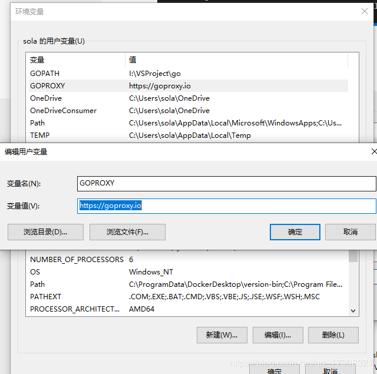

原文连接:https://www.cnblogs.com/ailumiyana/p/12061432.html
kratos微服务框架学习笔记一(kratos-demo)
今年大部分时间飘过去了，没怎么更博和github，现在开发任务也差不多完成了，会比较轻松，考虑到今后发展，打算看看微服务框架。
常见微服务框架主要有这么几个
gizmo, a microservice toolkit from The New York Times ★
go-micro, a microservices client/server library ★
gotalk, async peer communication protocol & library
Kite, a micro-service framework
gocircuit, dynamic cloud orchestration
Kratos,bilibili开源的一套Go微服务框架，包含大量微服务相关框架及工具。
这里有一篇关于kit,go-mirco,gizmo,Kite的比较：
Go 微服务框架对比：Go Micro, Go Kit, Gizmo, Kite
我打算最先看看的框架是kratos，也不为什么，因为喜欢b站(#^.^#)。
github上关于kratos的介绍：
名字来源于:《战神》游戏以希腊神话为背景，讲述由凡人成为战神的奎托斯（Kratos）成为战神并展开弑神屠杀的冒险历程。
目标
致力于提供完整的微服务研发体验，整合相关框架及工具后，微服务治理相关部分可对整体业务开发周期无感，从而更加聚焦于业务交付。对每位开发者而言，整套Kratos框架也是不错的学习仓库，可以了解和参考到bilibili在微服务方面的技术积累和经验。
Features
HTTP Blademaster：核心基于gin进行模块化设计，简单易用、核心足够轻量；
GRPC Warden：基于官方gRPC开发，集成discovery服务发现，并融合P2C负载均衡；
Cache：优雅的接口化设计，非常方便的缓存序列化，推荐结合代理模式overlord；
Database：集成MySQL/HBase/TiDB，添加熔断保护和统计支持，可快速发现数据层压力；
Config：方便易用的paladin sdk，可配合远程配置中心，实现配置版本管理和更新；
Log：类似zap的field实现高性能日志库，并结合log-agent实现远程日志管理；
Trace：基于opentracing，集成了全链路trace支持（gRPC/HTTP/MySQL/Redis/Memcached）；
Kratos Tool：工具链，可快速生成标准项目，或者通过Protobuf生成代码，非常便捷使用gRPC、HTTP、swagger文档；
kratos本体
先拉代码
如果下不动可以试试配置下代理

记得打开 go111module
kratos本体
类似于go命令，可以执行各种子工具，如go build、 go tool : kratos build 、kratos run
C:\server\src\test-src\Go_Test\kratos>kratos -h
NAME:
kratos - kratos工具集
USAGE:
kratos [global options] command [command options] [arguments...]
VERSION:
0.3.1
COMMANDS:
new, n 创建新项目
build, b kratos build
run, r kratos run
tool, t kratos tool
version, v kratos version
self-upgrade kratos self-upgrade
help, h Shows a list of commands or help for one command
GLOBAL OPTIONS:
--help, -h show help
--version, -v print the version
C:\server\src\test-src\Go_Test\kratos>kratos version
Version: 0.3.1
Go version: go1.13.5
Built: 2019/11/06
OS/Arch: windows/amd64demo
Quick start
Requirments
Go version>=1.13
Installation
GO111MODULE=on && go get -u github.com/bilibili/kratos/tool/kratos
cd $GOPATH/src
kratos new kratos-demo
通过 kratos new 会快速生成基于kratos库的脚手架代码，如生成 kratos-demo
Build & Run
cd kratos-demo/cmd
go build
./cmd -conf ../configs
打开浏览器访问：http://localhost:8000/kratos-demo/start，你会看到输出了Golang 大法好 ！！！
官方介绍的有点简洁，咱们动手一步步来：
先进入$GOPATH/src 目录
kratos new demo
C:\server\src\go\src>kratos new demo
go get -u github.com/bilibili/kratos/tool/kratos-gen-project
go: finding golang.org/x/sys latest
go: finding golang.org/x/crypto latest
genproject: 安装成功!
go: finding github.com/bilibili/kratos master
go: downloading github.com/bilibili/kratos v0.3.2-0.20191216053608-e8e05452b3b0
go: downloading google.golang.org/grpc v1.24.0
go: extracting google.golang.org/grpc v1.24.0
go: extracting github.com/bilibili/kratos v0.3.2-0.20191216053608-e8e05452b3b0
go: downloading golang.org/x/net v0.0.0-20191011234655-491137f69257
go: extracting golang.org/x/net v0.0.0-20191011234655-491137f69257
go: downloading github.com/prometheus/client_golang v1.1.0
go: downloading github.com/go-sql-driver/mysql v1.4.1
go: downloading github.com/fsnotify/fsnotify v1.4.7
go: downloading google.golang.org/genproto v0.0.0-20191009194640-548a555dbc03
go: downloading gopkg.in/go-playground/validator.v9 v9.29.1
go: downloading github.com/shirou/gopsutil v2.19.6+incompatible
go: extracting github.com/go-sql-driver/mysql v1.4.1
go: extracting github.com/prometheus/client_golang v1.1.0
go: extracting gopkg.in/go-playground/validator.v9 v9.29.1
go: extracting github.com/fsnotify/fsnotify v1.4.7
go: downloading github.com/dgryski/go-farm v0.0.0-20190423205320-6a90982ecee2
go: downloading github.com/gogo/protobuf v1.3.0
go: extracting github.com/dgryski/go-farm v0.0.0-20190423205320-6a90982ecee2
go: downloading github.com/go-playground/universal-translator v0.16.0
go: extracting github.com/go-playground/universal-translator v0.16.0
go: extracting google.golang.org/genproto v0.0.0-20191009194640-548a555dbc03
go: extracting github.com/gogo/protobuf v1.3.0
go: downloading github.com/go-playground/locales v0.12.1
go: downloading github.com/prometheus/common v0.6.0
go: downloading github.com/leodido/go-urn v1.1.0
go: extracting github.com/prometheus/common v0.6.0
go: extracting github.com/leodido/go-urn v1.1.0
go: downloading github.com/prometheus/client_model v0.0.0-20190129233127-fd36f4220a90
go: downloading github.com/matttproud/golang_protobuf_extensions v1.0.1
go: extracting github.com/prometheus/client_model v0.0.0-20190129233127-fd36f4220a90
go: extracting github.com/matttproud/golang_protobuf_extensions v1.0.1
go: downloading github.com/beorn7/perks v1.0.1
go: extracting github.com/go-playground/locales v0.12.1
go: extracting github.com/beorn7/perks v1.0.1
go get -u github.com/bilibili/kratos/tool/kratos-protoc
protoc: 安装成功!
2019/12/18 15:38:39 您还没安装protobuf，请进行手动安装：https://github.com/protocolbuffers/protobuf/releases
exit status 1
go get -u github.com/bilibili/kratos/tool/kratos-gen-bts
genbts: 安装成功!
Close: 无声明 忽略此方法
Ping: 无声明 忽略此方法
dao.bts.go: 生成成功
go get -u github.com/bilibili/kratos/tool/kratos-gen-mc
genmc: 安装成功!
mc.cache.go: 生成成功
go get -u github.com/google/wire/cmd/wire
go: finding github.com/google/wire v0.4.0
go: downloading github.com/google/wire v0.4.0
go: extracting github.com/google/wire v0.4.0
go: downloading golang.org/x/tools v0.0.0-20191105231337-689d0f08e67a
go: downloading github.com/google/subcommands v1.0.1
go: extracting github.com/google/subcommands v1.0.1
go: extracting golang.org/x/tools v0.0.0-20191105231337-689d0f08e67a
go: finding golang.org/x/tools latest
go: finding github.com/google/subcommands v1.0.1
go: downloading golang.org/x/tools v0.0.0-20191218040434-6f9e13bbec44
go: extracting golang.org/x/tools v0.0.0-20191218040434-6f9e13bbec44
wire: 安装成功!
wire: C:\server\src\go\src\demo\internal\di\wire.go:17:65: DemoServer not declared by package api
wire: generate failed
exit status 1
Project: demo
OnlyGRPC: false
OnlyHTTP: false
Directory: C:\server\src\go\src\demo
项目创建成功.其中提示了没安装protobuf，需要手动安装，先不管他直接跑demo试试。
2019/12/18 15:38:39 您还没安装protobuf，请进行手动安装：https://github.com/protocolbuffers/protobuf/releaseskratos run
C:\server\src\go\src\demo>kratos run
go: downloading github.com/shirou/gopsutil v2.19.6+incompatible
build command-line-arguments: cannot load github.com/shirou/gopsutil/cpu: github.com/shirou/gopsutil@v2.19.6+incompatible: reading https://goproxy.io/github.com/shirou/gopsutil/@v/v2.19.6+incompatible.zip: 410 Gone
panic: exit status 1
goroutine 1 [running]:
main.runAction(0xc0000922c0, 0x0, 0xc000042f30)
C:/server/src/go/pkg/mod/github.com/bilibili/kratos@v0.3.1/tool/kratos/run.go:25 +0x36e
github.com/urfave/cli.HandleAction(0x603080, 0x65fda8, 0xc0000922c0, 0xc0000922c0, 0x0)
C:/server/src/go/pkg/mod/github.com/urfave/cli@v1.22.2/app.go:523 +0xc5
github.com/urfave/cli.Command.Run(0x64c994, 0x3, 0x0, 0x0, 0xc000042de0, 0x1, 0x1, 0x650d90, 0xa, 0x0, ...)
C:/server/src/go/pkg/mod/github.com/urfave/cli@v1.22.2/command.go:174 +0x523
github.com/urfave/cli.(*App).Run(0xc0000ea000, 0xc0000044a0, 0x2, 0x2, 0x0, 0x0)
C:/server/src/go/pkg/mod/github.com/urfave/cli@v1.22.2/app.go:276 +0x72c
main.main()
C:/server/src/go/pkg/mod/github.com/bilibili/kratos@v0.3.1/tool/kratos/main.go:57 +0x3f7
报错:
cannot load github.com/shirou/gopsutil
好像是不能加载gopsutil 包
直接一下个试试：
go get -u github.com/shirou/gopsutil
C:\server\src\go\src\demo>go get -u github.com/shirou/gopsutil
go: downloading github.com/shirou/gopsutil v2.19.11+incompatible
go: extracting github.com/shirou/gopsutil v2.19.11+incompatible
C:\server\src\go\src\demo>kratos run
go: downloading github.com/StackExchange/wmi v0.0.0-20180116203802-5d049714c4a6
go: extracting github.com/StackExchange/wmi v0.0.0-20180116203802-5d049714c4a6
go: downloading github.com/go-ole/go-ole v1.2.4
go: extracting github.com/go-ole/go-ole v1.2.4
# demo/api
..\api\client.go:15:68: undefined: DemoClient
..\api\client.go:21:9: undefined: NewDemoClient
panic: exit status 2可以运行了，但是没跑起来，api路径貌似和protobuf是有关联的，那么安装个protobuf试试。
https://github.com/protocolbuffers/protobuf/releases
下载，我是windows系统在path里面添加下bin目录环境变量即可。
protoc
Usage: protoc [OPTION] PROTO_FILES
Parse PROTO_FILES and generate output based on the options given:
-IPATH, --proto_path=PATH Specify the directory in which to search for
imports. May be specified multiple times;
directories will be searched in order. If not
given, the current working directory is used.
If not found in any of the these directories,
the --descriptor_set_in descriptors will be
checked for required proto file.
--version Show version info and exit.
-h, --help Show this text and exit.
--encode=MESSAGE_TYPE Read a text-format message of the given type
from standard input and write it in binary
to standard output. The message type must
be defined in PROTO_FILES or their imports.
--decode=MESSAGE_TYPE Read a binary message of the given type from
standard input and write it in text format
to standard output. The message type must
be defined in PROTO_FILES or their imports.
--decode_raw Read an arbitrary protocol message from
standard input and write the raw tag/value
pairs in text format to standard output. No
PROTO_FILES should be given when using this
flag.
--descriptor_set_in=FILES Specifies a delimited list of FILES
each containing a FileDescriptorSet (a
protocol buffer defined in descriptor.proto).
The FileDescriptor for each of the PROTO_FILES
provided will be loaded from these
FileDescriptorSets. If a FileDescriptor
appears multiple times, the first occurrence
will be used.
-oFILE, Writes a FileDescriptorSet (a protocol buffer,
--descriptor_set_out=FILE defined in descriptor.proto) containing all of
the input files to FILE.
--include_imports When using --descriptor_set_out, also include
all dependencies of the input files in the
set, so that the set is self-contained.
--include_source_info When using --descriptor_set_out, do not strip
SourceCodeInfo from the FileDescriptorProto.
This results in vastly larger descriptors that
include information about the original
location of each decl in the source file as
well as surrounding comments.
--dependency_out=FILE Write a dependency output file in the format
expected by make. This writes the transitive
set of input file paths to FILE
--error_format=FORMAT Set the format in which to print errors.
FORMAT may be 'gcc' (the default) or 'msvs'
(Microsoft Visual Studio format).
--print_free_field_numbers Print the free field numbers of the messages
defined in the given proto files. Groups share
the same field number space with the parent
message. Extension ranges are counted as
occupied fields numbers.
--plugin=EXECUTABLE Specifies a plugin executable to use.
Normally, protoc searches the PATH for
plugins, but you may specify additional
executables not in the path using this flag.
Additionally, EXECUTABLE may be of the form
NAME=PATH, in which case the given plugin name
is mapped to the given executable even if
the executable's own name differs.
--cpp_out=OUT_DIR Generate C++ header and source.
--csharp_out=OUT_DIR Generate C# source file.
--java_out=OUT_DIR Generate Java source file.
--js_out=OUT_DIR Generate JavaScript source.
--objc_out=OUT_DIR Generate Objective C header and source.
--php_out=OUT_DIR Generate PHP source file.
--python_out=OUT_DIR Generate Python source file.
--ruby_out=OUT_DIR Generate Ruby source file.
@<filename> Read options and filenames from file. If a
relative file path is specified, the file
will be searched in the working directory.
The --proto_path option will not affect how
this argument file is searched. Content of
the file will be expanded in the position of
@<filename> as in the argument list. Note
that shell expansion is not applied to the
content of the file (i.e., you cannot use
quotes, wildcards, escapes, commands, etc.).
Each line corresponds to a single argument,
even if it contains spaces.确保protoc能够执行，删除demo目录重新创建：
这次能够运行成功了
先试试文档给的路径：
4.png)
不行， 看看源码:
blademaster应该就是对gin框架的裁剪
看看demo服务做了什么，
// New new a bm server.
func New(s pb.DemoServer) (engine *bm.Engine, err error) {
var (
hc struct {
Server *bm.ServerConfig
}
)
if err = paladin.Get("http.toml").UnmarshalTOML(&hc); err != nil {
if err != paladin.ErrNotExist {
return
}
err = nil
}
svc = s
engine = bm.DefaultServer(hc.Server)
pb.RegisterDemoBMServer(engine, s)
initRouter(engine)
err = engine.Start()
return
}
func initRouter(e *bm.Engine) {
e.Ping(ping)
g := e.Group("/abc")
{
g.GET("/start", howToStart)
}
}添加了个/abc组，注册了/start 路由.
// Group creates a new router group. You should add all the routes that have common middlwares or the same path prefix.
// For example, all the routes that use a common middlware for authorization could be grouped.
func (group *RouterGroup) Group(relativePath string, handlers ...HandlerFunc) *RouterGroup {
return &RouterGroup{
Handlers: group.combineHandlers(handlers),
basePath: group.calculateAbsolutePath(relativePath),
engine: group.engine,
root: false,
}
}看介绍，大概意思是创建给使用相同中间件和路径前缀的路由使用的路由组。
试试路径
/abc/start
成功了：